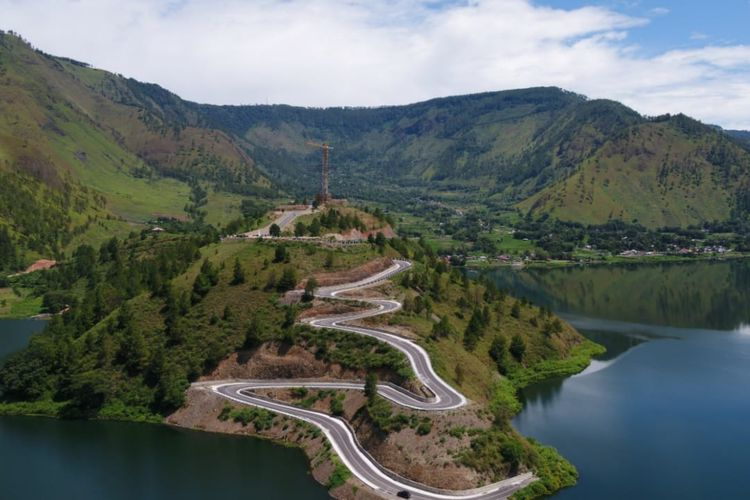

PATUNG YESUS SIBEA-BEA

Patung Yesus Kristus di Puncak Bukit Sibea-bea, Sumatera Utara
Sejarah Patung Yesus Sibea-bea
Patung Yesus di Sibea-bea merupakan salah satu ikon religi baru di Sumatera Utara, Indonesia. Terletak di puncak Bukit Sibea-bea, patung ini menghadirkan pemandangan spektakuler dari Danau Toba dan sekitarnya, serta menjadi destinasi wisata rohani bagi banyak peziarah dan wisatawan.
Pembangunan dan Signifikansi
Patung ini dibangun sebagai simbol kepercayaan dan perdamaian, serta untuk menarik wisatawan ke kawasan Danau Toba. Patung Yesus Sibea-bea menjadi salah satu patung tertinggi di Asia Tenggara, dengan ketinggian mencapai lebih dari 60 meter.
- Pembangunan: Dimulai pada tahun 2018 dan diresmikan sebagian pada tahun 2021.
- Ketinggian: Patung ini berdiri di ketinggian sekitar 600 meter di atas permukaan laut.
- Akses: Dapat dicapai melalui perjalanan darat dari Parapat atau Balige dengan waktu tempuh sekitar 2-3 jam.
Keindahan dan Atraksi di Sekitar Sibea-bea
Selain patung Yesus yang mengesankan, kawasan Sibea-bea juga menawarkan berbagai atraksi lain, seperti:
- Panorama Danau Toba: Pemandangan spektakuler dari puncak bukit yang menghadap langsung ke Danau Toba.
- Jalur Peziarahan: Jalan setapak yang mendaki bukit, dilengkapi dengan stasi-stasi Jalan Salib untuk refleksi rohani.
- Desa Wisata di Sekitar: Menyediakan penginapan dan pusat kerajinan lokal yang dapat dikunjungi wisatawan.
Lokasi
Bukit Sibea-bea, Kabupaten Samosir, Sumatera Utara, Indonesia
Untuk informasi lebih lanjut tentang Patung Yesus Sibea-bea, kunjungi Wikipedia.
Kembali ke Halaman Utama